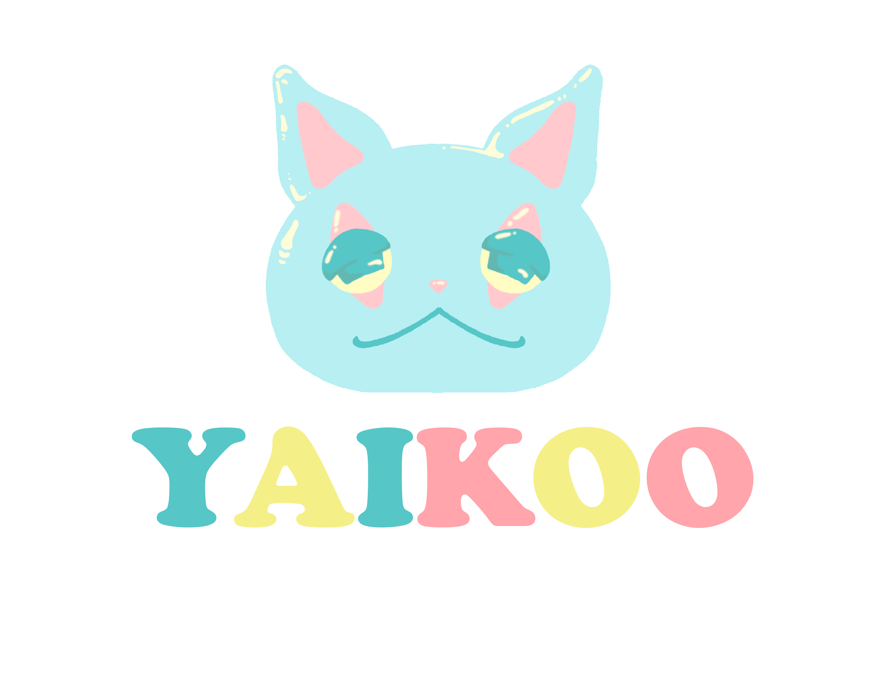

Tu espacio seguro para la salud mental
Estoy aquí para escucharte. ¿Sobre qué te gustaría que hablemos hoy? Elige un tema para comenzar un pequeño chequeo emocional.
*Recuerda: YAIKOO es un apoyo emocional, no un sustituto de terapia médica o psicológica profesional.